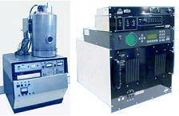

Physical
Vapor Deposition (PVD) by Evaporation
Physical Vapor
Deposition (PVD) is a process by which a thin film of material is deposited
on a substrate according to the following sequence of steps: 1)
the material to be deposited is converted into vapor by physical means; 2)
the vapor is transported across a region of low pressure from its source
to the substrate; and 3) the vapor undergoes condensation on the
substrate to form the thin film.
In VLSI fabrication, the most widely-used method of
accomplishing PVD of thin films is by
sputtering. However, there is a
second method of PVD also used in semiconductor fabrication, albeit to a
lesser extent. This is PVD by evaporation.
In PVD by sputtering, the material to be deposited as a film is converted
into vapor by bombarding the source material with high-energy particles or
ions. In PVD by evaporation, the conversion into vapor phase is
achieved by applying heat to the source material, causing it to undergo
evaporation. This is done in a
high-vacuum
environment, so that the vaporized atoms or molecules will be transported
to the substrate with minimal collision interference from other gas atoms
or molecules.
The rate of mass removal from the source material as a result of such
evaporation increases with vapor pressure, which in turn increases with
the applied heat. Vapor pressure greater than 1.5 Pa is needed in
order to achieve deposition rates which are high enough for manufacturing
purposes.
In the semiconductor industry, PVD by evaporation has been used primarily
in the deposition of aluminum (Al) and other metallic films on the wafer.
 |
|
Figure 1.
Examples of PVD Evaporation Systems |
The
advantages
offered by
evaporation for PVD are: 1) high film deposition rates; 2)
less substrate surface damage from impinging atoms as the film is being
formed, unlike sputtering that induces more damage because it involves
high-energy particles; 3) excellent purity of the film because of the high
vacuum condition used by evaporation; 4) less tendency for unintentional
substrate heating.
The
disadvantages
of using
evaporation for PVD are: 1) more difficult control of film
composition than sputtering; 2) absence of capability to do in
situ cleaning of substrate surfaces, which is possible in sputter
deposition systems; 3) step coverage is more difficult to improve by
evaporation than by sputtering; and 4) x-ray damage caused by electron
beam evaporation can occur.
There are several ways by which heating is achieved in PVD by evaporation.
The simplest (and one that has many disadvantages) is to employ
resistive heating,
wherein a wire of low vapor pressure metal such as tungsten is used to
support strips of the material to be evaporated. The wire is then
resistively heated, so that the metal to be deposited melts first and
evaporates.
In
electron beam evaporation,
a high kinetic energy beam of electrons is directed at the material for
evaporation. Upon impact, the high kinetic energy is converted into
thermal energy, heating up and evaporating the target material, on the
premise that the heat produced exceeds the heat lost during the process.
Evaporation can also be achieved by heating the source material with RF
energy. This technique employs an RF induction heating coil that
surrounds a crucible containing the source. This method of
evaporation is known as
inductive
heating evaporation.
See Also:
Thin
Films;
Metallization; PVD
by Sputtering; CVD
HOME
Copyright
© 2001-2004
www.EESemi.com.
All Rights Reserved.